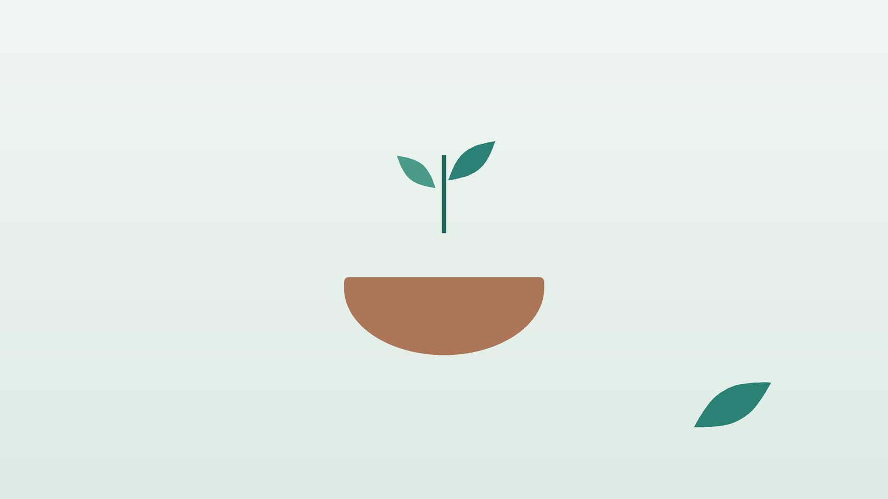

아이가 자주 지치고 입이 짧다면, 아이 보약이 필요한 때와 한방 관리

우리 아이에게 보약이 필요한 신호일까요?
- 어린이집이나 학교에 다니면서 한 달에 한 번꼴로 감기를 앓는다
- 밥 몇 숟가락 뜨고 나면 그만 먹겠다고 하고 간식만 찾는다
- 조금만 걸어도 안아 달라거나 다리가 아프다고 한다
- 잠들 때까지 오래 걸리고 밤중에 자주 깨거나 뒤척인다
- 가만히 있어도 머리와 등이 땀으로 젖는다
- 배가 아프다는 말을 자주 하고 변이 묽거나 토끼똥처럼 딱딱하다
이 체크리스트는 진단 도구가 아닙니다. 여러 항목이 몇 달째 이어진다면 진찰로 원인을 함께 찾아보세요.
보약은 언제 먹이는 것이 좋을까요?
보약을 먹일 정해진 나이나 계절은 없고, 아이의 상태가 기준입니다.
- 감기가 끊이지 않을 때: 한 번 걸리면 2주 넘게 콧물과 기침이 남거나, 낫자마자 또 걸리는 일이 반복됩니다.
- 먹는 양이 늘지 않을 때: 끼니마다 실랑이가 길고 체중이 몇 달째 제자리입니다.
- 기운이 금방 바닥날 때: 또래보다 놀이를 일찍 멈추고 오후만 되면 짜증이 늘어납니다.
- 잠이 개운하지 않을 때: 잠이 얕고 꿈을 많이 꾸며 아침에 일어나기 힘들어합니다.
- 큰 병을 앓고 난 뒤: 장염, 폐렴, 수족구 같은 병으로 입맛과 체력이 한동안 돌아오지 않습니다.
미국수면의학회(AASM)는 3~5세 하루 10~13시간, 6~12세 9~12시간, 13~18세 8~10시간의 잠을 권합니다. 잠과 끼니, 바깥 놀이가 충분한지부터 살펴봅니다.
보약보다 소아청소년과 진료가 먼저인 신호
- 체중이 줄었거나 키·몸무게가 성장 곡선에서 눈에 띄게 아래로 내려갔다
- 열이 일주일 넘게 이어지거나 원인 모를 열이 자주 난다
- 얼굴과 입술이 창백하고 숨이 차며 쉽게 멍이 든다
- 물을 유난히 많이 마시고 소변을 자주 보며 살이 빠진다
- 반복해서 토하거나 변에 피가 섞인다
- 숨을 쌕쌕거리고 밤마다 기침으로 잠을 깬다
빈혈, 당뇨, 천식, 장 질환처럼 검사와 치료가 필요한 병이 숨어 있을 수 있어 소아청소년과 진료를 먼저 받으세요. 아이가 축 처지고 물도 못 마시거나 숨쉬기 힘들어하면 바로 응급실로 향하세요.
한의학은 아이 몸을 어떻게 보나요?
송나라 소아과 의사 전을(錢乙)의 뜻을 담은 『소아약증직결(小兒藥證直訣)』은 아이의 오장육부가 '이루어졌으나 아직 온전하지 않고, 온전하나 아직 튼튼하지 않다'고 보았습니다.
그래서 아이 보약은 무조건 기운을 채우는 약이 아닙니다. 먹은 것을 소화해 힘으로 바꾸는 비위, 바깥 찬 기운을 막아 내는 폐, 잠과 정서를 다스리는 심(心)의 균형을 살펴 부족한 곳은 돕고 막힌 곳은 풀어 줍니다.
우리 아이는 어떤 유형일까?
두 유형이 겹치면 더 두드러진 쪽부터 처방합니다.
1. 비위허약(脾胃虛弱) 입이 짧은 유형
- 이런 아이에게 많아요
- 밥보다 과자를 좋아하고 마른 아이
- 나타나는 모습
- 몇 숟가락 먹으면 배부르다 하고 배가 자주 아프다
- 함께 오는 몸의 신호
- 묽은 변이나 변비, 얼굴빛이 누렇고 윤기 없음
- 진찰에서 보이는 모습
- 배를 누르면 차고 말랑하며 혀가 연함
- 치료 방향
- 소화하는 힘을 북돋아 입맛을 살리는 방향 (소건중탕·육군자탕 계열)
- 오늘부터 해 볼 것
- 식사 30분 전에는 간식과 음료를 주지 마세요.
2. 폐기허(肺氣虛) 감기를 달고 사는 유형
- 이런 아이에게 많아요
- 단체생활을 시작한 뒤 자주 아픈 아이
- 나타나는 모습
- 감기가 길게 가고 맑은 콧물·기침이 남는다
- 함께 오는 몸의 신호
- 땀이 많고 바람을 싫어함, 목소리가 작음
- 진찰에서 보이는 모습
- 얼굴이 희고 맥이 약함
- 치료 방향
- 겉을 단단히 해 찬 기운을 덜 타게 하는 방향 (옥병풍산·보중익기탕 계열)
- 오늘부터 해 볼 것
- 땀을 흘린 뒤에는 바로 옷을 갈아입혀 주세요.
3. 심비양허(心脾兩虛) 잠이 얕고 예민한 유형
- 이런 아이에게 많아요
- 겁이 많고 낯을 많이 가리는 아이
- 나타나는 모습
- 잠들기 어렵고 자주 깨며 무서운 꿈을 꾼다
- 함께 오는 몸의 신호
- 잘 놀라고 쉽게 울며 집중이 짧음
- 진찰에서 보이는 모습
- 혀끝이 붉거나 연하고 맥이 가늚
- 치료 방향
- 마음을 편히 하고 기혈을 보태는 방향 (귀비탕·감맥대조탕 계열)
- 오늘부터 해 볼 것
- 잠들기 1시간 전부터 화면을 끄고 불을 어둡게 해 주세요.
4. 음허내열(陰虛內熱) 열이 많고 마른 유형
- 이런 아이에게 많아요
- 볼이 잘 붉어지고 물을 자주 찾는 아이
- 나타나는 모습
- 밤에 이불을 차고 손발바닥이 뜨겁다
- 함께 오는 몸의 신호
- 잠잘 때 식은땀, 변이 딱딱함, 입이 마름
- 진찰에서 보이는 모습
- 혀가 붉고 태가 적음
- 치료 방향
- 몸의 진액을 보태 속열을 식히는 방향 (육미지황탕 계열)
- 오늘부터 해 볼 것
- 방을 너무 덥게 하지 말고 물을 자주 마시게 해 주세요.
한의원에서는 어떻게 진찰하나요?
- 자라 온 기록: 영유아 건강검진 결과나 키·몸무게 기록을 가져와 주세요.
- 하루 생활: 끼니 양과 시간, 간식, 잠드는 시각, 바깥 놀이, 화면 보는 시간을 여쭙습니다.
- 배와 혀, 맥: 배의 온기와 긴장, 혀 색과 태, 땀과 대변 상태를 살핍니다.
- 앓았던 병과 약: 최근 감기·장염 이력과 드시는 약을 알려 주시면 확인해 처방합니다.
스티커침과 한약은 어떻게 쓰나요?
1. 침 치료
어린이에게는 바늘로 찌르지 않고 피부에 붙이는 소아 스티커침을 씁니다.
- 족삼리(足三里): 무릎 바깥 아래 오목한 곳에서 아이 손가락 네 개 너비만큼 내려간 자리입니다. 소화하는 힘을 도울 때 씁니다.
- 중완(中脘): 배꼽과 명치 끝을 이은 선의 가운데입니다.
- 신주(身柱): 고개를 숙였을 때 가장 튀어나오는 목뼈 아래로 세 번째 등뼈 아래입니다. 감기가 잦은 아이에게 씁니다.
- 신문(神門): 손바닥 쪽 손목 주름의 새끼손가락 끝 오목한 곳입니다. 잠이 얕은 아이에게 씁니다.
2. 약침
아이 몸에는 약침을 놓지 않습니다.
3. 한약
유형에 맞춰 탕약 위주로 짓고, 쓴맛이 덜한 약재 위주로 구성해 나이와 체중에 맞게 양을 정합니다. 아이가 잘 먹지 않으면 집에서 단것을 조금 타서 먹여도 됩니다. 돌이 지나지 않은 아기에게는 꿀을 타지 마세요. 한약은 원장이 원내 탕전실에서 약재 선별부터 달이는 과정까지 직접 관리하며, 10일분씩 처방해 복용 경과를 보고 약재 구성과 양을 조절합니다.
녹용처럼 이름난 약재도 모든 아이에게 필요한 것은 아닙니다. 맞지 않는 아이에게는 열이 오르거나 속이 불편해질 수 있어 체질에 맞을 때만 넣습니다. 키 성장과 관련된 고민이 있다면 성장호르몬 분비와 관련해 연구되고 있는 약재를 고려할 수 있지만, 몇 cm가 더 큰다는 식의 약속은 드리지 않습니다.
원장님이 네이버 블로그에 진료 이야기와 건강 정보를 꾸준히 올리고 있습니다. 더 많은 이야기는 블로그에서 확인해 보세요.
블로그 보기관리는 어떤 순서로 진행되나요?
- 병 확인 성장 곡선과 병의 신호를 보고, 필요하면 소아청소년과 진료를 먼저 안내합니다.
- 첫 진료 생활 습관과 배·혀·맥을 살펴 유형을 나눕니다.
- 한약과 스티커침 부족한 쪽을 도우면서 끼니와 잠 습관을 함께 바로잡습니다.
- 다시 보기 입맛, 감기 횟수, 잠을 처음과 비교해 약을 조절하거나 마칩니다.
기간과 횟수는 증상이 얼마나 오래되었는지, 동반 증상이 무엇인지에 따라 달라지며, 진찰 후 개인별로 안내합니다.
집에서 함께 챙길 다섯 가지
- 끼니 시간 정하기: 세끼와 간식 두 번을 거의 같은 시각에 주고, 식사는 30분 안에 마칩니다.
- 바깥 놀이: 하루 한 시간 이상 햇볕 아래에서 뛰어놀면 입맛과 잠이 함께 좋아집니다.
- 찬 음료 줄이기: 아이스크림과 찬 우유는 식후에 조금만 주세요.
- 잠자리 규칙: 같은 시각에 불을 끄고, 잠들기 전 책 읽기처럼 차분한 순서를 만듭니다.
- 배 문질러 주기: 잠자리에서 배꼽 둘레를 시계 방향으로 30번 천천히 문지르고, 족삼리를 엄지로 열 번 꾹꾹 눌러 주세요.
다른 진료가 함께 필요한 경우
- 성장 곡선에서 3백분위수 아래이거나 키 크는 속도가 갑자기 느려지면 소아청소년과·소아내분비 진료를 받으세요.
- 입이 짧고 얼굴이 창백하면 혈액 검사로 철결핍 빈혈을 확인해 보세요.
- 밤에 숨을 멈추거나 코를 심하게 골면 이비인후과에서 편도·아데노이드를 확인하세요.
- 불안이나 산만함이 생활을 방해할 정도라면, 증상이 가벼운 경우 한약 치료를 중심으로 관리하기도 합니다. 증상이 깊으면 소아정신과 치료를 함께 받으세요.
자주 묻는 질문 Q&A
- Q1. 아이 보약은 몇 살부터 먹일 수 있나요?
- 나이보다 상태가 기준입니다. 어린 아기일수록 양을 줄여 짓고, 진찰 후 필요할 때만 처방합니다.
- Q2. 봄·가을마다 한 번씩 꼭 먹여야 하나요?
- 정해진 주기는 없습니다. 감기, 입맛, 잠에 불편이 있을 때 먹이는 것이 좋습니다.
- Q3. 녹용을 꼭 넣어야 하나요?
- 녹용은 여러 약재 중 하나일 뿐이며, 체질에 맞지 않으면 넣지 않는 편이 낫습니다.
- Q4. 보약을 먹으면 감기에 안 걸리나요?
- 감기를 아예 막을 수는 없습니다. 덜 자주, 덜 길게 앓도록 돕는 것을 목표로 합니다.
- Q5. 감기에 걸렸는데 보약을 계속 먹여도 되나요?
- 열이 나거나 증상이 심할 때는 잠시 멈추고 감기부터 다스리는 것이 좋습니다. 진료 때 여쭤 주세요.
- Q6. 아이가 쓴 약을 뱉어 버리면 어떻게 하죠?
- 쓴맛이 덜한 약재 위주로 짓고, 단것을 조금 섞어도 됩니다. 돌이 지나지 않은 아기에게는 꿀을 타지 마세요.
- Q7. 소아청소년과 약과 같이 먹여도 되나요?
- 대부분 시간을 띄워 먹일 수 있습니다. 받아 온 약 이름을 알려 주시면 확인해 처방합니다.
- Q8. 스티커침은 아프지 않나요?
- 찌르지 않고 붙이기만 해서 아이들도 대부분 잘 견딥니다.
문원열 대표원장한의사 · 365스마일한의원
임상 경력 15년, 인천 서구 가정동에서 개원 후 10년째 진료하고 있으며, FCST 턱관절학회·연부조직학회·침도학회 등에서 활동합니다. 아픈 곳만이 아니라 증상의 원인을 찾아 진료합니다.
진료 안내
- 진료시간
- 평일 09:00~20:00 (점심시간 13:00~14:00, 접수 마감 19:30)
토·일·공휴일 09:00~15:00 (접수 마감 14:30) - 주소
- 인천광역시 서구 가경주로 46, 2층 (가정동)
인천2호선 가정중앙시장역 인근
영상으로 길 안내 보기 → - 주차
- 한의원 건물 바로 앞 1층 도원주차장, 또는 도보 5분 거리 가정주차장
- 예약
- 예약 바로가기 또는 전화 예약
진료시간은 사정에 따라 바뀔 수 있으니 방문 전 전화로 확인해 주세요.
함께 읽으면 좋은 칼럼
건강 칼럼 전체 보기 →


참고 자료
- Paruthi S, et al. Recommended Amount of Sleep for Pediatric Populations: A Consensus Statement of the American Academy of Sleep Medicine. Journal of Clinical Sleep Medicine, 2016
- 전을(錢乙), 『소아약증직결(小兒藥證直訣)』
- 질병관리청 국가건강정보포털 — 원문
※ 이 글은 일반적인 건강 정보이며, 개인의 상태에 따라 치료 방법과 결과는 다를 수 있습니다. 정확한 진단과 치료는 진료를 통해 결정됩니다. 침·약침 시술 후 드물게 멍, 통증 등이 생길 수 있습니다.